Sistema de Archivos (File System)
La mayoría de los usuarios de una computadora han tenido que lidiar con el concepto, de alto nivel, de lo que es un file system. Si bien el concepto puede parecer fácil de comprender, a muchos usuarios no expertos a veces se les complica entender el concepto.
Un file system o sistema de archivos permite a los usuarios organizar sus datos para que se persistan a través de un largo período de tiempo.
De hecho, organizar un sistema de archivos de forma que sea funcional a un usuario no es tarea sencilla. Existen varias convenciones de cómo poner nombres en un file system:
Formalmente un file system es:
Una abstracción del sistema operativo que provee datos persistentes con un nombre.
Datos persistentes son aquellos que se almacenan hasta que son explícitamente ( o accidentalmente :pensive: ) borrados, incluso si la computadora tiene un desperfecto con la alimentación electrica.
El echo de que los datos tengan un nombre es con la intención de que un ser humano pueda acceder a ellos por un identificador que el sistema de archivos le asocia al archivo en cuestion.
Además, esta posibilidad de identificacion permite que una vez que un programa termina de generar un archivo otro lo pueda utilizar, permitiendo así compartir la informacion entre los mismos. Existen dos partes fundamentales de esta abstracción :
- Los archivos, que están compuestos por un conjuntos de datos.
- Los directorios, que definen nombres para los archivos.
Archivos
Un archivo es una colección de datos con un nombre específico. Por ejemplo /home/mariano/MisDatos.txt. Los archivos proveen una abstracción de más alto nivel que la que subyace en el dispositivo de almacenamiento; un archivo proporciona un nombre único y con significado para referirse a una cantidad arbitraria de datos.
Por ejemplo, /home/mariano/MisDatos.txt podria estar guardada en el disco en los bloques 0x0A23D42F, 0xE3A2540F y en 0x5567Ae34; es evidente que es muchísimo más fácil recordar /home/mariano/MisDatos.txt que esa lista de bloques en los que se almacena el archivo los datos.
Además, la información que se almacena en un archivo se divide en dos partes:
- Metadata: información acerca del archivo que es comprendida por el Sistema Operativo, esta información es :
- tamaño
- fecha de modificación
- propietario
- información de seguridad (que se puede hacer con el archivo.
Para poder ver la metadata de un archivo existen varias opciones:
$ ls -lisan prueba
28332376 4 -rw-rw-r-- 1 1000 1000 1457 ene 13 20:48 prueba
o de una forma mas human-readable:
$ stat prueba
Fichero: 'prueba'
Tamaño: 1457 Bloques: 8 Bloque E/S: 4096 fichero regular
Dispositivo: 803h/2051d Nodo-i: 28332376 Enlaces: 1
Acceso: (0664/-rw-rw-r--) Uid: ( 1000/ mariano) Gid: ( 1000/ mariano)
Acceso: 2017-05-31 15:17:23.460862535 -0300
Modificación: 2017-01-13 20:48:39.716785878 -0300
Cambio: 2017-01-13 20:48:39.760786398 -0300
Creación: -
- Datos: son los datos propiamente dichos que quieren ser almacenados. Desde el punto de vista del Sistema Operativo, un archivo o file no es mas que un arreglo de bytes sin tipo.
Directorios o Directories
Mientras que los archivos almacenan metadatos definidos por el S.O. y datos arbitrarios de los programas; los directorios proveen los nombres para estos archivos. En particular un directorio es una lista de nombre human-friendly y su mapeo a un archivo o a otro directorio.
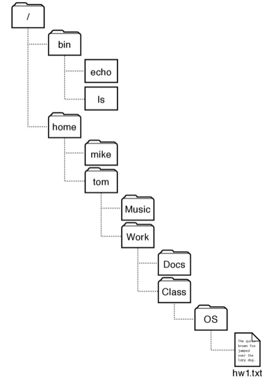
-
_path o ruta _ es el string que identifica unívocamente a un directorio o archivo dentro de un dispositivo.
-
root directory o directorio raiz es el directorio de que cuelgan todos los demás.
-
absolute path es la ruta desde el directorio raiz e.i. “/home/mariano/prueba”.
-
relative path es el path relativo que se interpreta a partir del directorio actual.
-
current directory es el directorio actual en el cual se está ejecutando el proceso.
-
hard link es el mapeo entre el nombre y el archivo subyaciente, esto implica que la estructura de un file system que permite multiples hard links ya no es de árbol invertido. Aquelllos S.O. que lo permiten se cuidan de no crear ciclos asegurandose que la estructura sea un grafo dirigido aciclico.
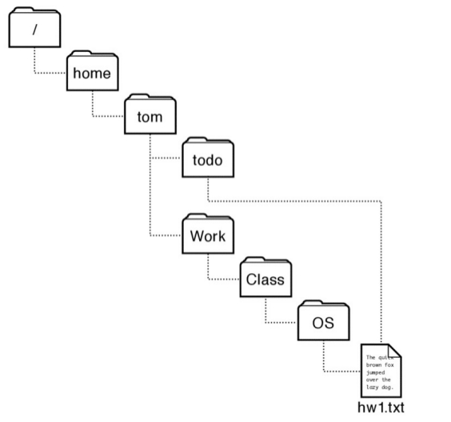
- soft links se da cuando un archivo puede ser llamado por distintos nombres.
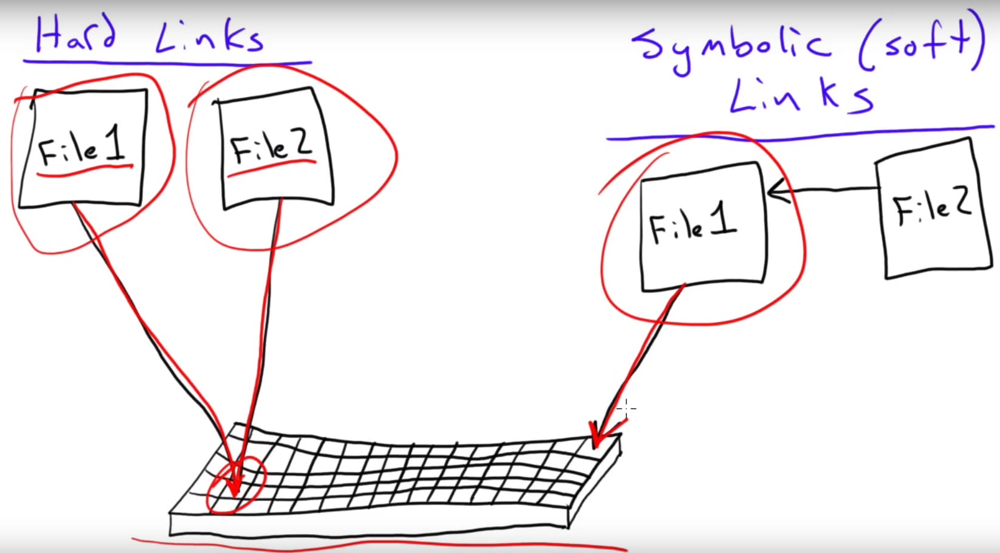
- Volumen es una una abstracción que corresponde a un disco lógico. En el caso más simple un disco corresponde a un disco físico. Es una colección de recursos físicos de almacenamiento.
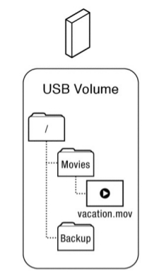
- mount point es un punto en el cual el root de un volumen se engancha dentro de la estructura existente de otro file system, mejor verlo:
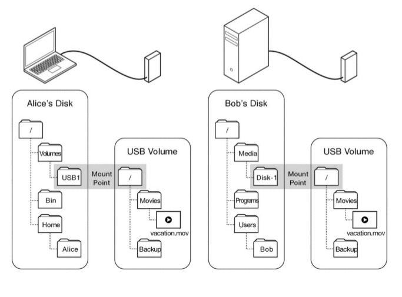
Ejecutar el comando :
$ mount | column -t
EL API
- Creacionales:
- create(pathName) crea un nuevo archivo con el nombre especificado.Hace dos cosas:
- crea un nuevo archivo con su meta data pero sin datos asociados a este.
- crea un nombre para ese achivo en el directorio.
-
link(existingName,newName) crea un hardlink, el NewName va a apuntar a un archivo ya existente, basicamente crea un nuevo path para un archivo ya existente. Linux soporta hard link para archivos pero no para directorios.
-
unlink(pathname) elimina el nombre especificado de un archivo de su directorio. Si es el ultimo hard link al archivo subyacente se borra el archivo y liberan los recursos utilizados por este. Si el archivo tiene varios nombres, unlink sólo elimina el especificado. Ahora si el especificado es el último o (único) también borra el archivo y libera los recursos que este ocupa.
-
mkdir(pathName) se crea un nuevo directorio con el nombre especificado.
- rmdir(pathname) elimina el directorio cuyo nombre se especifica.
- Apertura y Cierre
-
fileDescriptor open(pathName) se prepara para acceder al archivo especificado. Chequea permisos de acceso, inicializa estructuras de datos del kernel para el seguimiento per-process del estado de los archivos abiertos, etc.
-
close(fileDescriptor) se liberan recursos asociados al archivo abierto cuyo nombre es especificado.
Nota: En Unix el concepto de File Descriptor es equivalente a lo que en otros sistemas es el file stream o file handler.
El Sistema Operativo requiere que un proceso explicitamente llame a open() y acceda al archivo via read() y write() mediante el filedescriptor y no por su path por:
- el parseo de la ruta con el nombre del archivo y el chequeo de los permisos se realiza únicamente una vez en el open().
-
cuando El Sistema Operativo abre un archivo se crea una estructura de datos que guarda información sobre los archivos abiertos que tiene el proceso con datos como por ejemplo el ID, la posicion actual, etc.
- Acceso a datos
-
read(fileDescriptor,buf,len) lee la cantidad len de bytes de la posicion actual del proceso en el archivo abiarto fileDescriptor y copia el resultado el el buffer buf.
-
write(fileDescriptor,len,buff) escribe la cantidad len de bytes de datos desde un buffer llamado buf en la memoria de un proceso a la posicion actual del archivo abierto fileDescriptor.
-
seek(fileDescriptor,offset) cambia la posiscion del archivo abierto fileDescriptor en el en el actual proceso por el especificado en el offset.
-
dataPtr mmap(fileDescriptor,off,len) mapea el archivo fileDescriptor desde off hasta off+ len en la memoria virtual a partir de dataPtr hasta dataPtr+len.
-
munmap(dataPtr,len) elimina el mapeo entre la memoria virtual del programa y el archivo mapeado.
-
fsync(fileDescriptor) fuerza a bajar al dispositivo todo lo bufereado, dirty pages del archivo asociado al fileDescriptor.
Ejemplo del uso de mmap:
#include <stdio.h>
#include <fcntl.h>
#include <sys/types.h>
#include <sys/stat.h>
#include <unistd.h>
#include <sys/io.h>
#include <sys/mman.h>
int main(int argc, char const *argv[])
{
unsigned char *f;
int size;
struct stat s;
const char * file_name = argv[1];
int fd = open (argv[1], O_RDONLY);
/* Get the size of the file. */
int status = fstat (fd, & s);
size = s.st_size;
f = (char *) mmap (0, size, PROT_READ, MAP_PRIVATE, fd, 0);
for (int i = 0; i < size; i++) {
char c;
c = f[i];
putchar(c);
}
return 0;
}
- Metadata:
- stat(filePath, struct stat *buf) muestra los de el archivo cuya ruta esta dada por filePath. esta estructura es la siguiente:
struct stat{ dev_t st_dev ID of device containing file ino_t st_ino file serial number mode_t st_mode mode of file (see below) nlink_t st_nlink number of hardlinks to the file uid_t st_uid user ID of file gid_t st_gid group ID of file dev_t st_rdev device ID (if file is character or block special) off_t st_size file size in bytes (if file is a regular file) time_t st_atime time of last access time_t st_mtime time of last data modification time_t st_ctime time of last status change blksize_t st_blksize a filesystem-specific preferred I/O block size for this object. In some filesystem types, this may vary from file to file blkcnt_t st_blocks number of blocks allocated for this object } - fsstat(fileDescriptor, struct stst * buff)
- stat(filePath, struct stat *buf) muestra los de el archivo cuya ruta esta dada por filePath. esta estructura es la siguiente:
Software Layers
Los sistemas operativos implementan la abstracción de un file system a travez de una serie de capas de software. Estas capas son :
- Application
- Library
- File System
- Block Cache
- Block Device Interface
- Device Driver
- Memory Mapped I/O,DM
- Phisical Device
y están separadas en dos conjuntos:
API y Performance (2,3,4)
Las capas de alto nivel proveen un API para trabajar con archivos con nombre y minimizar los costos en tiempos de acceso como por ejemplo utilizando caching, buffering y prefetching:
-
System Call y bibliotecas: la abstracción del file system se provee mediante un API usando system calls o mediante la implemetacion de bibliotecas que esconden el uso de estas system calls.
Por ejemplo en Unix puede accederse a un archivo mediante las system calls: open(),read(),write() y close(). Sino, alternativamente utilizando las funciones de stdio.h: fopen(), fread(), fwrite() y fclose().
La diferencia entre la primer forma y la segunda, es que esta última usa buffers para traer más datos. -
Block Cache: Es sabido que la mayoria de los dispositivos de almacenamiento son más lentos que la memoria principal de la computadora. Por ende el sistema operativo tiene un cache de bloques en el cual se guardan los bloques recientemente leídos o los bloques recientemente escritos. Además de mejorar el rendimiento en lo que respecta a tiempos, los cache de bloques se utilizan como punto de sincronización (se prevee que un proceso lea un bloque mientras otro lo está escribiendo).
-
Prefetching: El Sistema Operativo usa esta tecnica para mejorar el rendimiento respecto a los tiempos de Acceso I/O. Si un proceso lee los 5 primeros bloques de un archivo, el sistema operativo trae los 25 siguientes bloques. Esto tiene un aspecto positivo:
- reduce latencia
- reduce overhead, la sobrecarga de los dispositivos.
- Ayuda al paralelismo, permite multiples pedidos de una sola ves (RAID,Flash)
y tiene un aspecto negativo:
- cache preasure, mucho movimiento del cache idas y vueltas de bloques.
- I/O contention, consumo de I/O.
Device Access
La parte baja de las capas de software permite a los Sistemas Operativos acceder a un rango muy amplio de dispositivos. Los Manejadores de Dispositivos o device drivers esconden la implementación especifica del hardware de I/O poniendo ese codigo de una forma más simple, más general.
Los Device Drivers realizan la traducción entre los detalles especificos de los dispositivos de entrada y salida a las abstracciones de alto nivel implementadas por el sistema operativo.
Las capas simplifican la tarea del sistema operativo y proveen formas comunes de acceder a distintos dispositivos.Por ejemplo existen dispositivos llamados block devices y los sistemas operativos implementan los drivers para este tipo de hardware, que leen y escriben en bloques de tamaño fijo.
$ lsblk
NAME MAJ:MIN RM SIZE RO TYPE MOUNTPOINT
sda 8:0 0 698,7G 0 disk
├─sda1 8:1 0 487M 0 part /boot/efi
├─sda2 8:2 0 93,1G 0 part /
├─sda3 8:3 0 599,1G 0 part /home
└─sda5 8:5 0 5,9G 0 part [SWAP]
sr0 11:0 1 1024M 0 rom
loop0 7:0 0 79,5M 0 loop /snap/core/1689
loop1 7:1 0 78,3M 0 loop /snap/core/1441
loop2 7:2 0 78,4M 0 loop /snap/core/1577
loop3 7:3 0 32K 0 loop /snap/tio/4
Memory Mapped I/O
- Los dispositivos de I/O están conectados a un bus de I/O, que a su vez está conectado con el bus de la memoria del sistema.
- Cada dispositivo de I/O posee un controlador con un conjunto de registros que pueden ser escritos o leidos para transmitir comandos y datos al mismo.
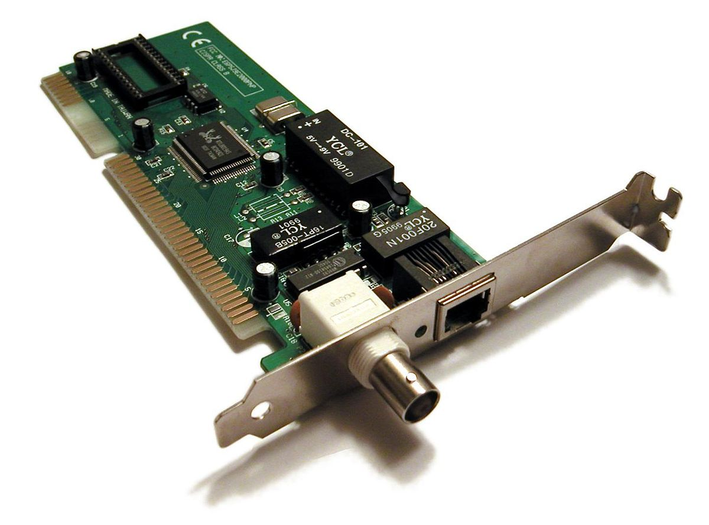
-
Para permitir que los registros de los dispositivos de I/O puedan ser leidos y escritos, se implemeta el Mapeo de memoria o memory mapped I/O que consiste en mapear los registros de los dispositivos a un rango de memoria física en el bus de memoria.
-
Las lecturas y escrituras de la CPU a estas posiciones no van a la memoria principal sino a los registros de los dispositivos de I/O. Por ejemplo para saber cual fue la ultima tecla que se presiona se debe leer la direccion de memoria fisica 0xC00002000.
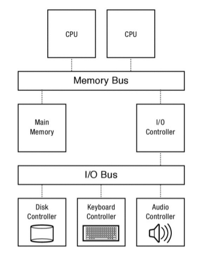
Estas direcciones pueden ser vistas ejecutando el comando:
$ cat /proc/iomem
000a0000-000bffff : Video RAM area
000c0000-000ccfff : Video ROM
000d1000-000d1fff : Adapter ROM
000f0000-000fffff : System ROM
d7f00000-f7efffff : PCI Bus #01
e8000000-efffffff : 0000:01:00.0
fc700000-fccfffff : PCI Bus #01
fcc00000-fcc0ffff : 0000:01:00.0
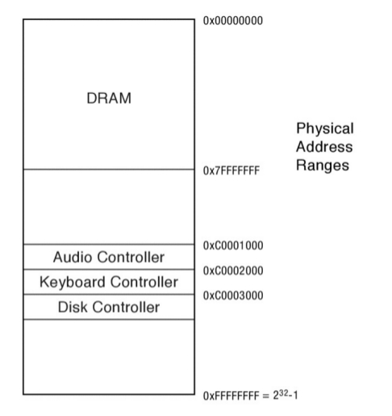
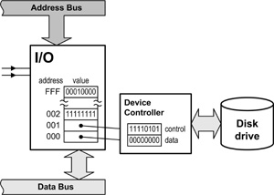
Un ejemplo clásico es la extensión de I/O que permitia el bus PC ISA:
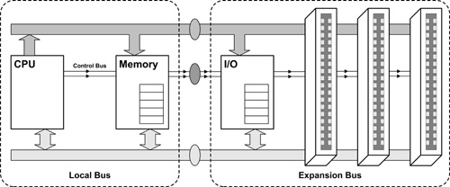
DMA
En la actualidad la mayoria de los dispositivos mandan los datos en grandes cantidades, no se leen del disco uno o dos bytes de datos, usualmente se transfieren varios Kb por vez. Los dispositivos de I/O actualmente permiten copiar bloques de datos entre su memoria interna y la memoria de la computadora, esta técnica se denomina Direct Memory Access.
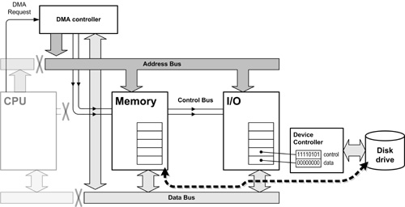
Interupciones
El sistema Operativo necesita saber cuando un dispositivo de I/O terminó de manejar una petición de I/O, o saber cuando una nueva petición se inicio. Para ello se utilizan interrupciones para notificar al sistema operativo que está sucediendo un evento importante, normalmente se las conoce como IRQ. Utilizando el comando cat /proc/interrupts se pueden listar todas las interrupciones del systema.
Conclusión
Cuando un proceso llama a una system call como read() para leer datos del disco a la memoria del proceso:
- El sistema operativo pasa ese thread a el estado wait y lo coloca en la waiting queue
- Entonces el Sistema Operativo usa la memoria mapeada de I/O para decirle al disco que lea los datos requeridos e inicie el DMA de forma tal que el dispositivo pueda copiar los datos directamente en la memoria del kernel.
- El disco lee los datos y hace los DMA necesarios para poner los datos en la memoria.
- Cuando esto está hecho el disco dispara una interrupción IRQ.
- El sistema operativo maneja esa interrupcion pasa los datos del buffer que están en el kernel a la memoria del proceso.
- Finalmente el thread se mueve a la ready list.
- Cuando el thread vuelve a correr los datos están en el buffer requerido.
Dahlin Capítulo 11
Implementación de un File System
A continuación se verá la descripción de la implementacion de vsfv ( Very Simple File System) descriptto en el capitulo 40 del ++[ARP]++. Este file system es una versión simplificada de un típico sistema de archivos unix-like. Existen diferentes systemas de archivos y cada uno tiene ventajas y desventajas.
Para pensar en un file system hay que comprender dos conceptos fundamentales:
-
El primero es la estructura de datos de un sistema de archivos. En otras palabras como se guarda la informacion en el disco para organizar los datos y metadatos de los archivos. El sistema de archivos vsfs emplea una simple estructura, que parece un arreglo de bloques.
-
El segundo aspecto es el método de acceso, como se machean las llamadas hechas por los procesos , como open(), read(), write(), etc. en la estructura del sistema de archivos.
Organización general
A continuación se analizará la organización general de los datos en el disco del vsfs. Lo primero que se debe hacer es dividir al disco en bloques, los sistemas de archivos simples, como este suelen tener bloques de un solo tamaño. Los bloques tienen un tamaño de 4 kBytes.
La vision del sistema de archivos debe ser la de una particion de N bloques ( de 0 a N-1) de un tamaño de N * 4 KB bloques. si suponemos en un disco muy pequeño, de unos 64 bloques, este podria verse así:
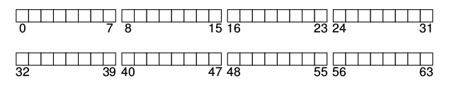
A la hora de armar un sistema de archivos una de las cosas que es necesario almacenar es …. porsupuesto que datos, de hecho la mayor cantidad del espacio ocupado en un file system es por los datos de usuarios. Esta región se llama por ende data region.
Otra vez en nuestro pequeño disco es ocupado por ejemplo por 56 bloques de datos de los 64:
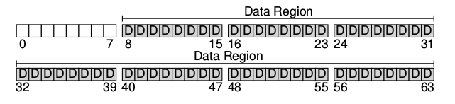
Como se ha visto anteriormente el sistema de archivos debe mantener informacion sobre cada uno de estos archivos. Esta informacion es la metadata y es de vital importancia ya que mantiene información como que bloque da datos pertenece a un determinado archivo, el tamaño del archivo, etc. Para guardar esta información, en los sistemas operativos unix-like, se almacena en una estructura llamada inodo.
Los inodos tambien deben guardarse en el disco, para ello se los guarda en una tabla llamada inode table que simplemente es un array de inodos almacenados en el disco:
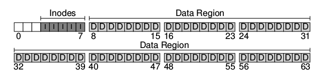
Cabe destacar que los inodos no son estructuras muy grandes, normalmente ocupan unos 128 o 256 bytes. Suponiendo que los inodos ocupan 256 bytes , un bloque de 4KB puede guardar 16 inodos por ende nuetro sistema de archivo tendrá como maximo 80 inodos. Esto representa tambien la cantidad maxima de archivos que podrá contener nuestro sistema de archivos.
El sistema de archivo tiene los datos (D) y los inodos (I) pero todavia nos falta. Una de las cosas que faltan es saber cuales inodos y cuales bloques están siendo utilizados o está libres. Esta *estructura de alocación** es fundamental en cualquier sistema de archivos. Existen muchos metodos para llevar este registro pero en este caso se utilizará una estructura muy popular llamada bitmap. Una para los datos data bitmap ora para los inodos ** inode bitmap**.
Un bitmap es una estructura bastante sencilla en la que se mapea 0 si un objeto está libre y 1 si el objeto está ocupado. En este cado i seria el bitmap de inodos y d seria el bitmap de datos:
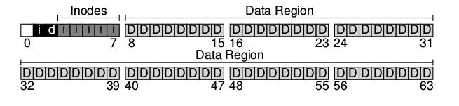
Obviamente cada bitmap ocupa menos de 4KB, pero se utiliza un bloque por cada uno indefectiblemente.
Se podrá observar que queda un único bloque libre en todo el disco. Este bloque es llamado Super Bloque (S). El superbloque contiene la información de todo el file system, incluyendo:
- cantidad inodos
- cantidad de bloques
- donde comienza la tabla de inodos –> bloque 3
- donde comienzan los bitmaps
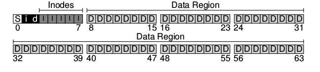
Los Inodos
Esta es una de las estructuras almacenadas en el disco más importantes. Casi todos los sistemas de archivos unix-like son así. Su nombre , probablemente ṕrovenga de los viejos sistemas UNIX enlos que estos se almacenaban en un arreglo, y este arreglo estaba indexado de forma de como acceder a un inodo en particular.
Un inodo simplemente es referido por un número llamado inumber que sería lo que hemos llamado el nombre subyacente en el disco de un archivo. el este sistema de archivos y en varios otros, dado un inumber se puede saber directamente en que parte del disco se encuentra el inodo correspondiente:
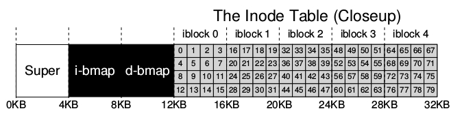
Para leer el inodo numero 32, el sistema de archivos debe:
- debe calcular el offset en la regio de inodos 32* sizeof(inode) = 8192
- sumarlo a la direccion inicial de la inode table en el disco o sea 12Kb+ 8192 bytes
- llegar a la direccion en el disco deseada que es la 20 KB.
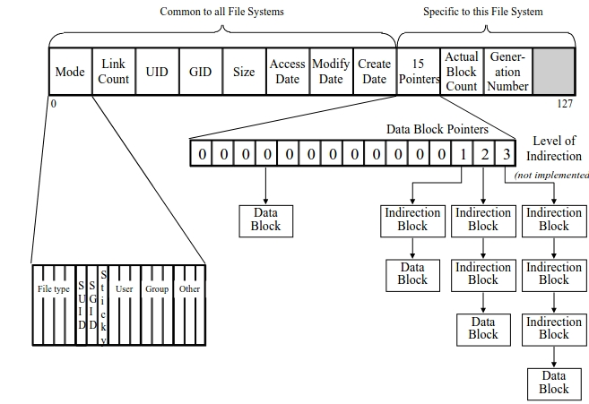
Sistemas de Archivos
- FAT : File Allocation Table
- NTFS : New Technology File System
- EXT : Extended File System
- NFS : Network File System